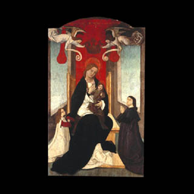

Senhora da Rosa
Séc. XV MNMC 11266
Séc. XV MNMC 11266
1486? MNMC 2521 – 2524
1505 - 1510 MNMC 3351
1514 - 1517 MNMC 2518 2519 11267
Séc. XVI MNMC 2520
Séc. XVI MNMC 2547
1522 - 1530 MNMC 2512
Séc. XVI MNMC 2540
1531 MNMC 2515 – 2517
Séc. XVI MNMC 11268
1570 - 1580 MNMC 2526
c.1608 MNMC 2584
1611 - 1620 MNMC 2505
1630 – 1640 MNMC 2442
c.1650 MNMC 2649
c.1675 - 1680 MNMC 2450
Séc. XVIII MNMC2627